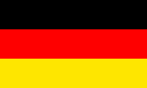
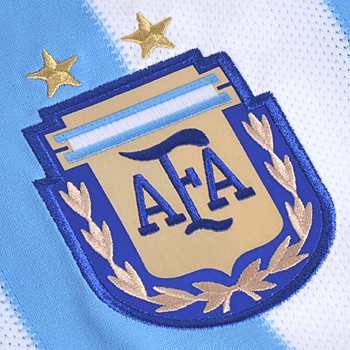

GERMANY
The World Cup holders are in good shape to defend their title after being unbeaten in all games in 2017.
They have already collected a trophy in Russia in the build-up to the World Cup, winning the Confederations Cup in July and using the warm-up tournament to test new options like late developer Lars Stindl.
World Cup qualifying was completed with 10 wins from 10 and a European-record 43 goals.Key player: Toni Kroos (Real Madrid) - Germany's new leader, Kroos keeps the side ticking from midfield, where his intelligence, precision and composition on the ball inspires teammates going forward. Thomas muller , lemar , marco rues etc are f

ARGENTINA
A team featuring Lionel Messi can never be ignored, even though the 2014 runner-up barely made it to this World Cup.
But other key talent like Sergio Aguero and Gonzalo Iguain have been far from being in top form for Argentina. That is why little-known Boca Juniors striker Daria Benedetto has been deployed up front.
Key player: Messi (Barcelona) - Doubted by fans, yet the five-time world player of the year delivered. Argentina would not be going to Russia without his goals and leadership. Turns 31 during a tournament that could yet crown his career.
BELGIUM
It's time to deliver for a team featuring such exceptional talent. But this is a country that is yet to break into the semifinals of a tournament.
It is widely acknowledged they have been held back by mediocre management. Now it is up to Roberto Martinez, a Spanish coach, to get the best out of this plethora of stars.
If you have Romelu Lukaku up front, Eden Hazard as a creative genius and goalkeeper Thibaut Courtois for a final lock on goal, the ingredients for success are there.
There are issues in defense. Central defender Vincent Kompany is as brittle as he can be brilliant and there are very few credible backups available for the likes of Toby Alderweireld and Jan Vertonghen.